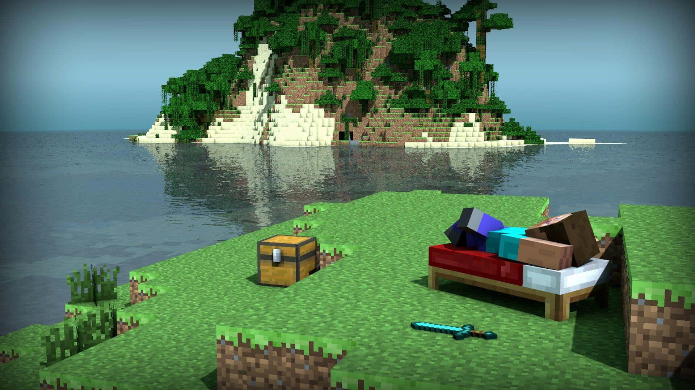
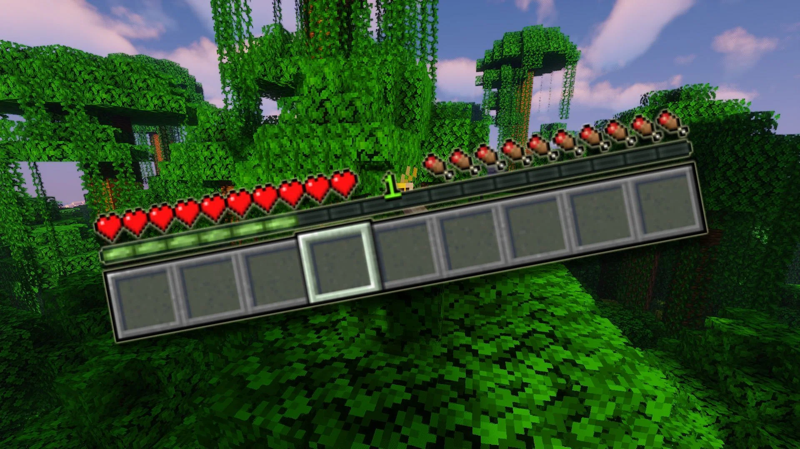
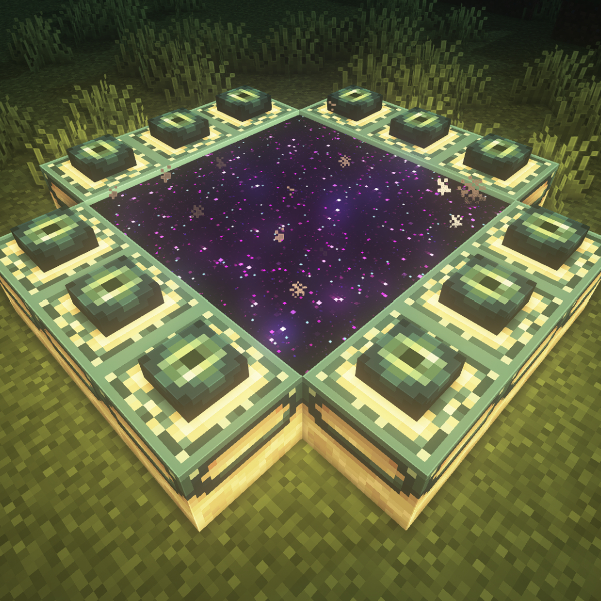

Minecraft: Survival Mode
Welcome to the heart of Minecraft's adventure: Survival Mode. This mode challenges you to utilize your resourcefulness and creativity as you navigate a dynamic world filled with endless possibilities and dangers. In Survival Mode, every moment is a test of your ingenuity and resilience as you strive to thrive in a world that evolves around you.

Expectations in Survival Mode:
Gathering Resources
In Survival Mode, your journey begins with the need to gather essential resources. The world is rich with materials that you’ll need to survive and prosper. As you explore, you’ll find wood from trees to craft basic tools and build shelters. Wooden materials can also be used to smelt items in a furnace in place of coal. Another important resource in Survival Mode is stone. Stone creates more durable tools and essential crafting items. Lastly, ores such as iron, gold, and diamonds can be used to upgrade your gear and create advanced tools.
Health and Hunger
Managing your health and hunger is crucial in Survival Minecraft. The environment presents various challenges, and you'll need to hunt animals and farm crops to keep your hunger bar full. Cooking food to restore health and gain nourishment is equally important as cooked food provides players with more hunger bars from a cooked item. Also, be sure to avoid or mitigate damage from hostile mobs and environmental hazards; once players have taken enough damage to lose all their health, they will be met with a “You Died!” screen in which players will have to respawn and relocate their belongings at the place of death.
Crafting and Building
Creativity is key in Survival Mode. With a vast crafting system at your disposal, you can craft tools like pickaxes, shovels, and swords from gathered materials. With these tools, you can then use them to continue crafting to your heart’s content! Additionally, you can build structures ranging from basic shelters to elaborate fortresses. Storage sheds, pools, and rollercoasters are just a few examples of some builds players can make. After gathering the necessary materials, players can create various items such as potions, armor, and enchanted gear.
Exploration and Adventure
The world of Minecraft is teeming with opportunities for exploration and discovery. Prepare to explore diverse biomes, each with unique resources and challenges, discover hidden treasures in caves, mineshafts, and temples, and face formidable bosses and hostile creatures that test your survival skills.

Day/Night Cycle
The ever-changing day and night cycle brings new dynamics to your survival. During the day, gather resources and build defenses. At night, however, be cautious of hostile mobs that spawn in the dark and prepare to protect your shelter.
Progression and Goals
Survival Mode offers a multitude of objectives and goals. An example of this would be to build and upgrade your base to withstand the dangers of the world. Players can also embark on quests and challenges, from slaying bosses to finding rare items. Another objective would be to explore every corner of the world and uncover its secrets—which also proves as an easy way to gather materials.
Survival Mode is designed for those who relish the thrill of adventure and the satisfaction of crafting their destiny. Embrace the challenges, explore the unknown, and create your own story in the boundless world of Minecraft.